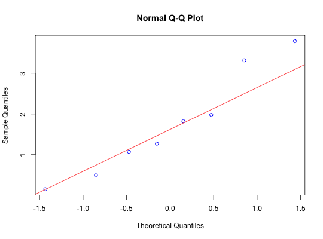

Data for Example 6.9
A data frame with 8 observations on the following variable.
Kitchens, L. J. (2003) Basic Statistics and Data Analysis. Duxbury
str(Haptologo)#> 'data.frame': 8 obs. of 1 variable: #> $ concent: num 1.82 3.32 1.07 1.27 0.49 3.79 0.15 1.98 #>attach(Haptologo) qqnorm(concent,col="blue")qqline(concent,col="red")shapiro.test(concent)#> #> Shapiro-Wilk normality test #> #> data: concent #> W = 0.93818, p-value = 0.5932 #> #>t.test(concent,mu=2,alternative="less")#> #> One Sample t-test #> #> data: concent #> t = -0.58143, df = 7, p-value = 0.2896 #> alternative hypothesis: true mean is less than 2 #> 95 percent confidence interval: #> -Inf 2.595669 #> sample estimates: #> mean of x #> 1.73625 #> #>detach(Haptologo)